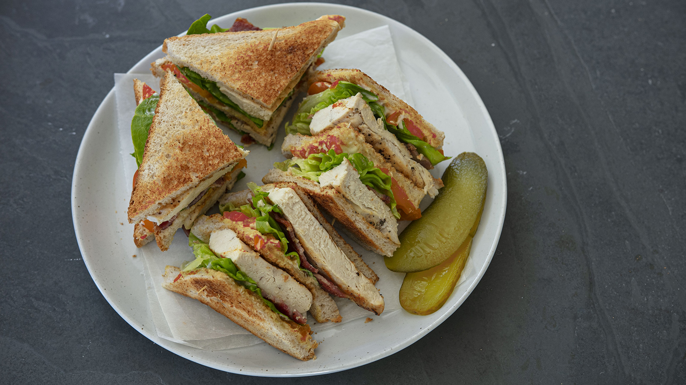

Low-Calorie Turkey and Avocado Sandwich

Description
This low-calorie sandwich is a healthy and delicious option for a quick lunch or snack. Made with lean turkey
breast, avocado, and whole wheat bread, each serving contains approximately 350 calories and 30 grams of
protein.
Ingredients
- 2 slices whole wheat bread
- 2 oz lean turkey breast, sliced
- 1/2 avocado, mashed
- 1 lettuce leaf
- 1 tomato slice
- 1 tablespoon low-fat mayonnaise
- Salt and pepper to taste
Steps
- Lay the slices of whole wheat bread on a flat surface.
- Spread 1 tablespoon of low-fat mayonnaise on each slice.
- Top with sliced turkey breast, mashed avocado, lettuce leaf, and tomato slice.
- Season with salt and pepper to taste.
- Assemble the sandwich and serve immediately.